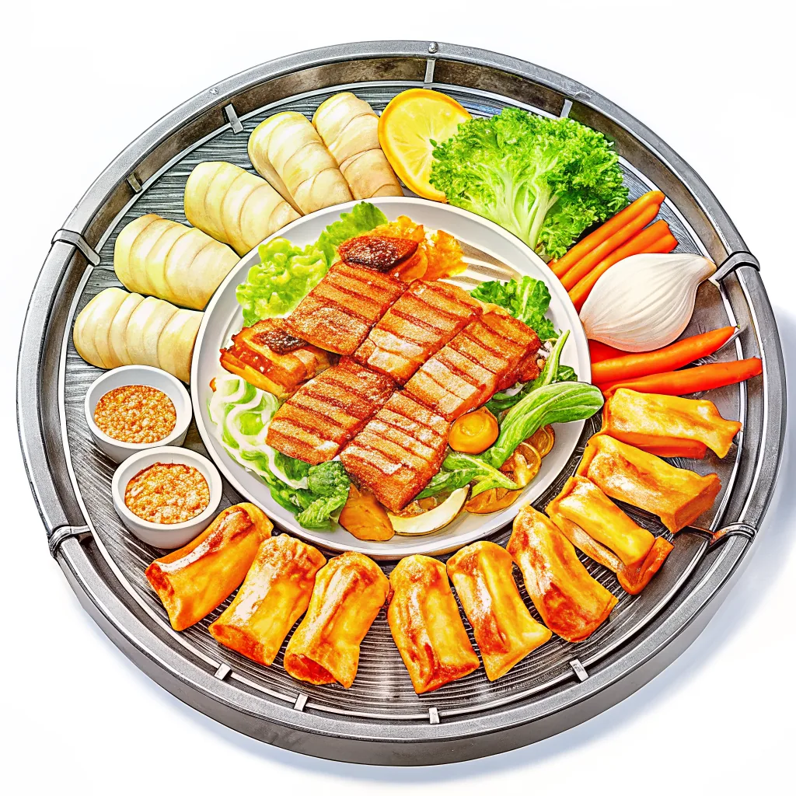
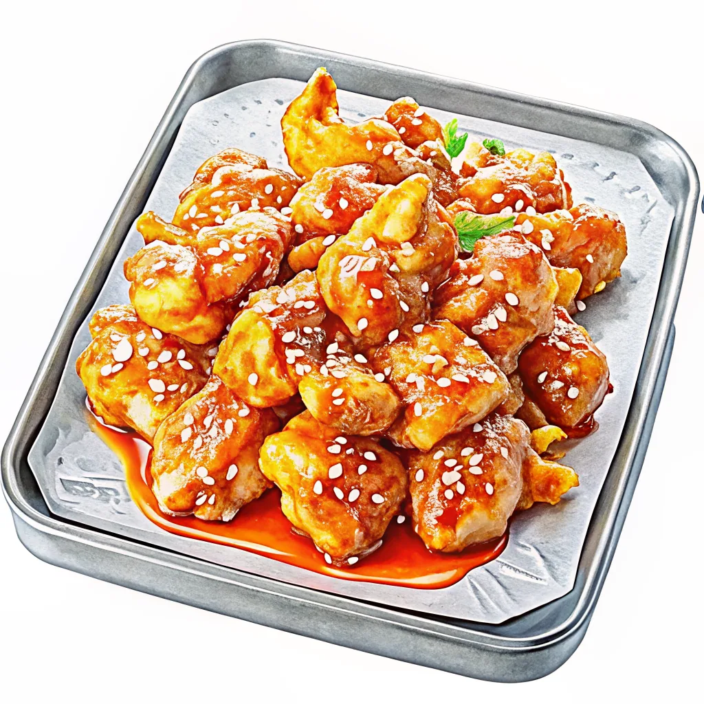
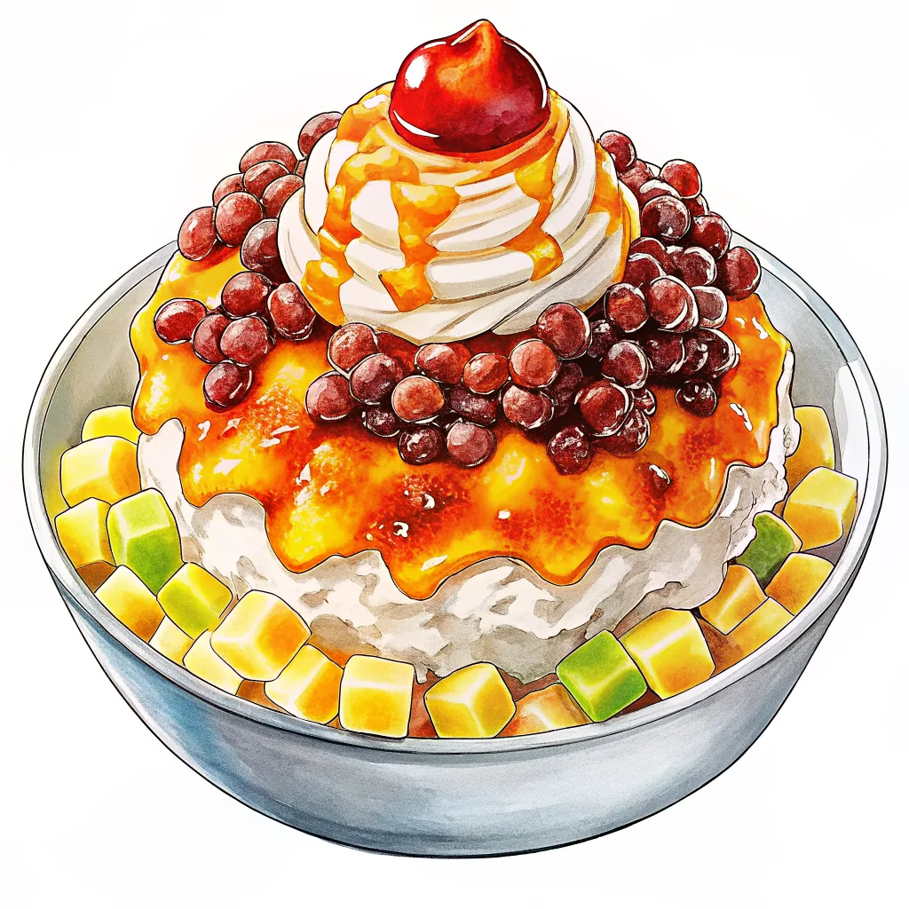
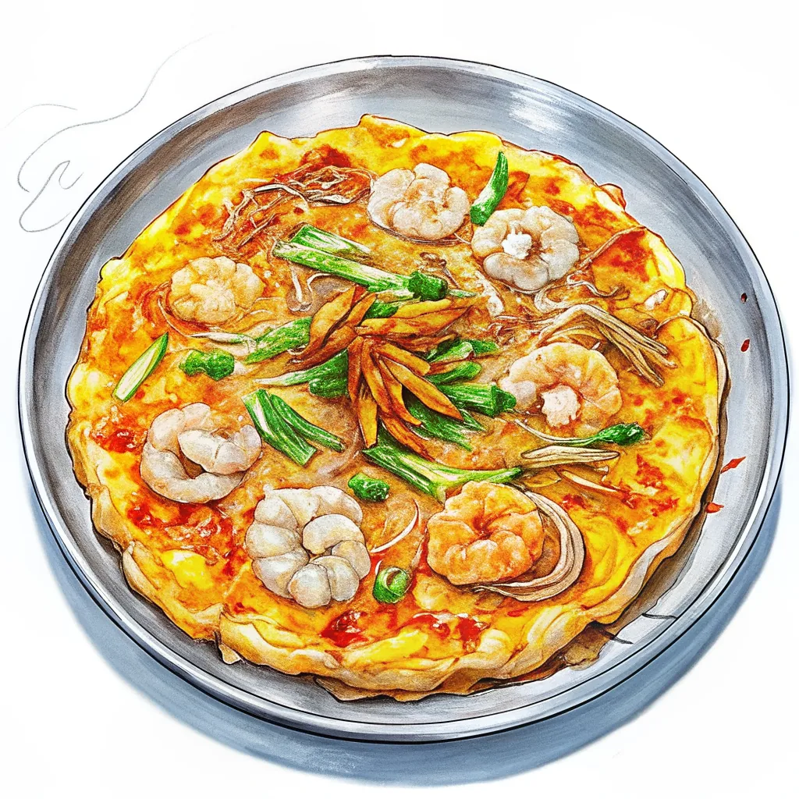
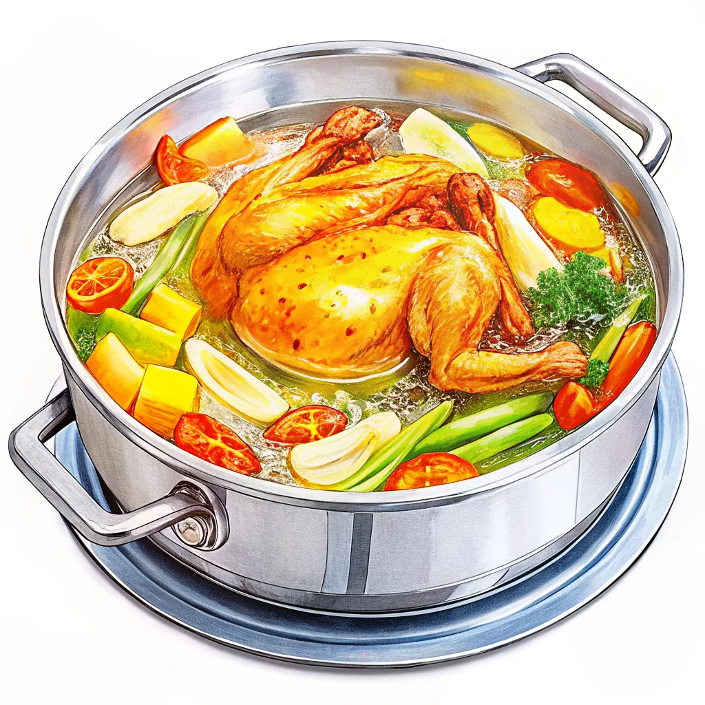
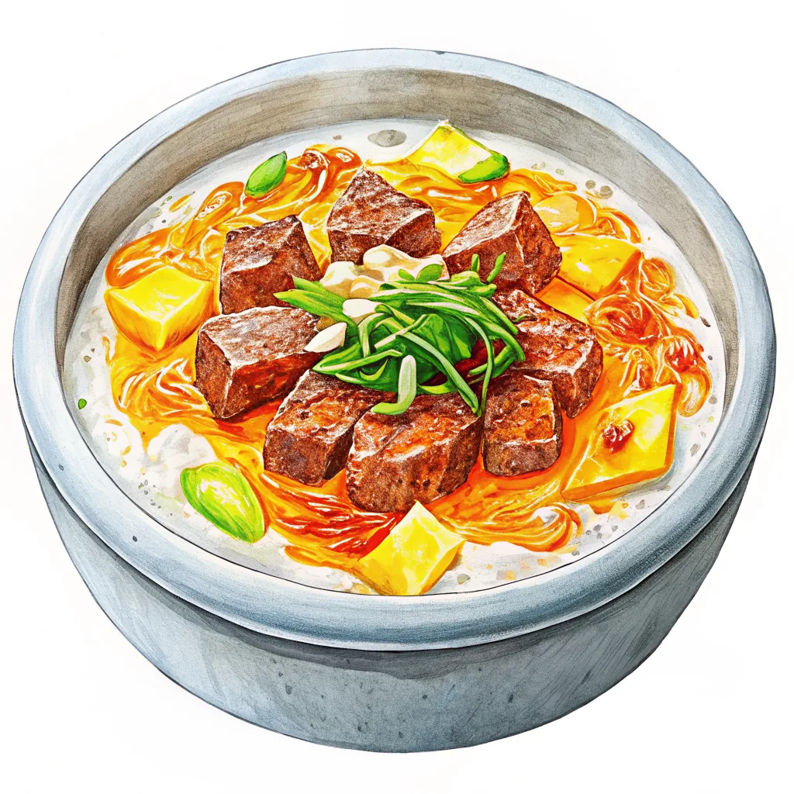
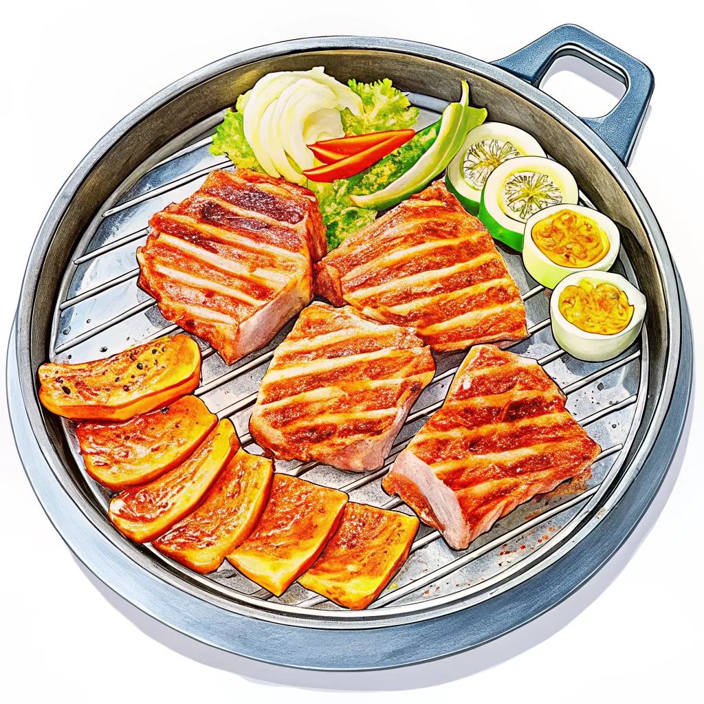
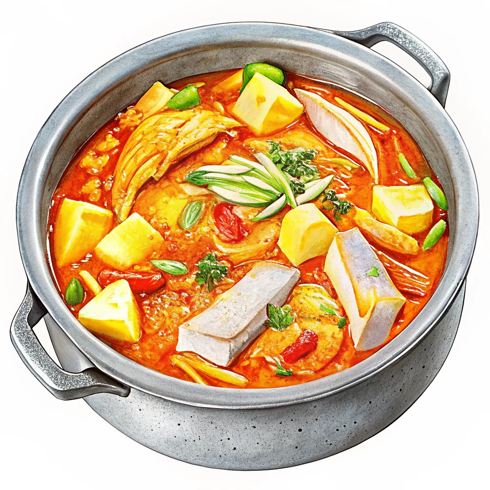
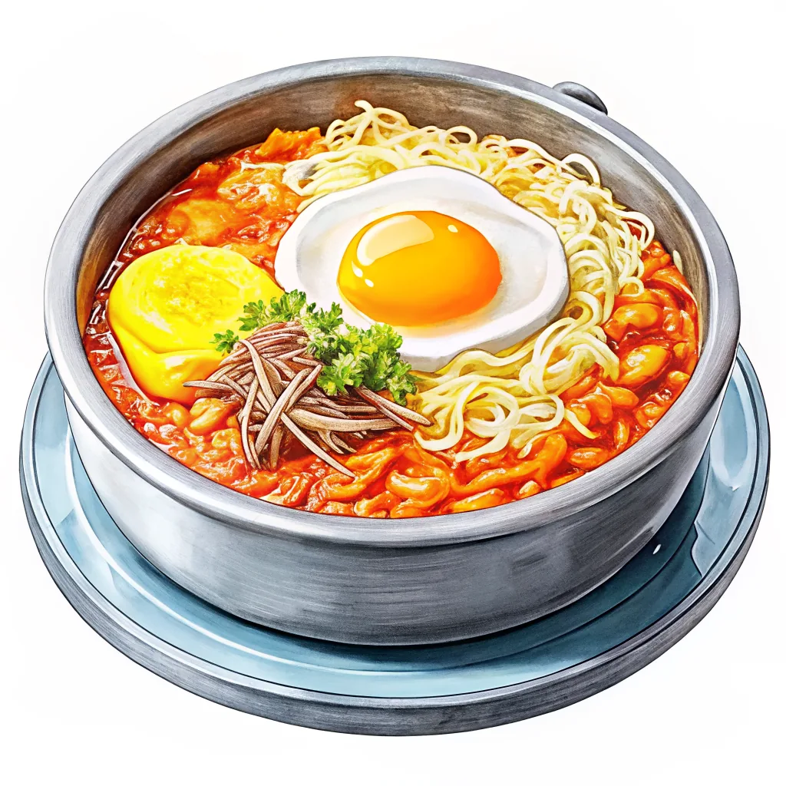

韓国グルメ図鑑
カテゴリー
エリア限定
No.1
サムギョプサル
定番焼肉厚切り豚バラ肉を鉄板で焼き、サンチュやエゴマの葉で包んで食べる韓国焼肉の王道。1人前1,200円前後、ソジュとの相性は抜群。

詳しく調べる →No.9
コリアンフライドチキン
ビールのお供二度揚げでカリッと仕上げた韓国式フライドチキン。ヤンニョム（甘辛ダレ）味が特に人気で「チメク」（チキン＋ビール）は定番の楽しみ方。

詳しく調べる →No.11
ピンス
夏の氷スイーツふわふわのミルク氷にきな粉やフルーツ、餅をトッピングした韓国式かき氷。氷自体をミルクで凍らせて削る「ソルビン（雪氷）」スタイルが主流で、専門チェーン店も多い。カフェごとに個性豊かなアレンジがある。

詳しく調べる →No.12
釜山名物 ミルミョン＆テジクッパ
釜山グルメ釜山発祥の冷麺の一種ミルミョンと、豚骨スープに豚肉とご飯を入れたテジクッパ。どちらも地元民のソウルフードとして愛される、港町・釜山ならではの二枚看板。
 詳しく調べる →
詳しく調べる →
No.13
パジョン（海鮮チヂミ）
全土共通の定番小麦粉の生地に海鮮とネギをたっぷり混ぜて焼く韓国風お好み焼き。マッコリのお供として全土で親しまれる定番の一皿。

詳しく調べる →No.14
タッカンマリ
東大門の名物鍋鶏一羽をまるごと野菜と一緒にじっくり煮込んだシンプルな鍋料理。東大門には専門店街があり、締めはカルグクス（麺）やご飯で。日本の韓国料理店でも人気の高い定番メニュー。

詳しく調べる →No.15
ソルロンタン
ソウルの滋味スープ牛骨と牛肉を白濁するまでじっくり煮込んだ、ソウルを代表する滋味深いスープ。塩気控えめで提供されるため、卓上の塩やネギで自分好みの味に調整するのが定番の食べ方。

詳しく調べる →No.16
済州島黒豚焼肉
済州グルメ済州島固有の在来種「済州黒豚」を厚切りで焼く、島を代表するご馳走。脂身に甘みがあり、味噌だれや塩でシンプルに味わうのが地元流。専門店が集まる黒豚通りは観光客にも大人気。

詳しく調べる →No.17
カルチジョリム（太刀魚の煮付け）
済州の郷土料理太刀魚を大根やコチュジャンベースのピリ辛だれでじっくり煮込んだ済州島の郷土料理。脂ののった太刀魚の身はほろほろと崩れるやわらかさで、ご飯が進む一皿として地元でも人気が高い。

詳しく調べる →No.18
コンナムルクッパ
全州名物豆もやしをたっぷり煮込んだ透き通るスープに、卵やご飯を落として食べる全州の朝ごはん・二日酔い覚まし飯。あっさりした味わいながら旨みが染み出し、韓屋村散策前の一杯にちょうどいい。

詳しく調べる →食べたいものが決まったら旅程を組もう！
安定タイプ・冒険タイプ2種類のモデルコースを用意。
管理人の実際の旅ルートもそのまま公開しています。